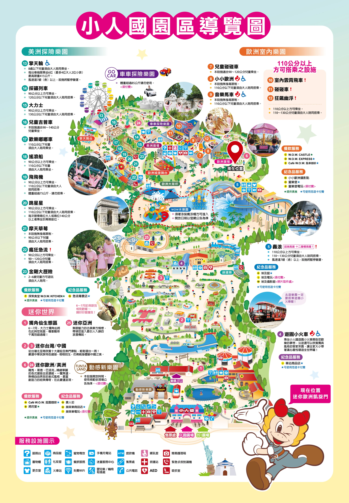

<div class="map-container" id="mapContainer">
  
</div>

<style>
  .map-container {
    width: 100%;
    height: 100vh;
    overflow: auto; /* 允許自由滑動 */
    position: relative;
    background-color: #fcebd1;
    scroll-behavior: smooth;
  }
  #park-map {
    width: 250%; /* 地圖放大比例，可自行微調 */
    max-width: none; 
    display: block;
  }
</style>

<script>
  window.onload = function() {
    const container = document.getElementById('mapContainer');
    const img = document.getElementById('park-map');
    setTimeout(function() {
      // Map_M 專屬座標 (0.67, 0.32)
      const targetX = (img.clientWidth * 0.67) - (container.clientWidth / 2);
      const targetY = (img.clientHeight * 0.32) - (container.clientHeight / 2);
      container.scrollTo({ left: targetX, top: targetY, behavior: 'smooth' });
    }, 300);
  };
</script>
